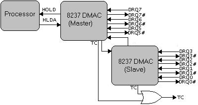

8237A ISA DMAC Programming
Note: From here on out, demo names will follow the format Demo00, where 00 is the chapter name. This is to help the current issue with demo names and chapter names not being related to each other and to help make it easier for readers to know what chapter a particular demo refers to. Older chapters will be updated with this setup. Once all chapters have been updated this comment will be removed.
Also note: The Virtual PC bug has been fixed in this chapter but not the previous chapter yet. While the previous chapters demo does not work well in Virtual PC, this chapters demo seems to work fine with a minor bug fix and update in the DMA code. This demo has been tested and works on Virtual PC and Bochs. Once the previous chapter has been updated with this fix, this comment will be removed.
Welcome! 😀
In this chapter, we will take a close look at the Direct Memory Access Controller (DMAC). The DMAC provides us a way to transfer blocks of data from a device directly into memory without the software doing it. This allows for a very fast way of transferring data as it is the hardware doing it - not the software.
Here is on the list for today:
- DMA History
- DMA Hardware
- DMA Ports
- DMA Registers
- DMA Commands
Abstract
Direct Memory Access (DMA) is a feature in all modern computers that allow devices to be able to move large blocks of data without any interaction with the processor. This can be useful, as you may have already seen from the floppy programming chapter. While the device transfers the block of data, the processor is free to continue running the software without worry about the data being transferred into memory, or to another device. The basic idea is that we can schedule the DMA device to perform the task on its own. Cool, huh?
Different buses and architecture designs have different methods of performing direct memory access. While our focus at this time will be the ISA Direct Memory Access Controller (DMAC) I decided to address the other methods as well for completeness.
ISA
The Industry Standard Architecture (ISA) provides a centric location for DMA requests through a controller based off of the Intel 8237 Microcontroller. In the ATX motherboard designs, there was only a single controller. Do to the limitations of a controller only supporting 8 devices, however, in AT and newer architectures there are two controllers. They are slaved together, in a similar way the Programmable Interrupt Controllers (PIC) are slaved together. Both controllers always run at 4MHz.
Because of their performance and limited number of devices, newer devices tend to us PIO or UDMA instead. DMA is still supported in ISA for legacy devices however.
All of these devices are connected to Channels on the controller. Along with these channels, each channel has a DACK (DMA Acknowledge) line and a DRQ (DMA Request).
Here are the standard assignments on both Direct Memory Access Controllers (DMAC).
- XT:
- Channel 0: Used by system, not available (DRAM Refresh, obsolete)
- Channel 1: Available, no standard DMA assignment
- Channel 2: Floppy Disk Controller
- Channel 3: Hard Disk Controller (PIO or UDMA recommended instead)
- AT only:
- Channel 4: Cascaded to XT controller - Slave DMA controller input into Master
- Channel 5: Available, no standard DMA assignment (16 bit)
- Channel 6: Available, no standard DMA assignment (16 bit)
- Channel 7: Available, no standard DMA assignment (16 bit)
To start a transfer, the software sets the channels address and count registers to the location in physical memory where the transfer is to be completed, and the size of the transfer. Afterwords it sets to either read or write from that block of memory and then sets the controller on its way to complete the transfer. After the transfer completes, the device that started the transfer issues an Interrupt Request (IRQ) to be caught by the system software for further processing. This is important! These are the steps that we will need to perform when using the DMA to start transfers.
PCI
PCI devices do not share the same DMA controller, nor have a central DMA controller. Instead, a PCI device on the PCI Local Bus requests to be the Bus Master (taking control of the bus) from the PCI Bus Controller. Afterwords, a request to read or write to or from physical memory is passed to the northbridge which will convert the request into memory operations and send the operations to the Memory Controller.
PCI transfers are limited to 4GB physical memory. However if the device and the PCI bridge impliments Double Address Cycle (DAC) or similar technology, it will allow the PCI controller to initiate requests for reading and writing beyond 4GB physical memory.
ISA DMA Hardware
Direct Memory Access Controller (DMAC)
The Industry Standard Architecture (ISA) uses a controller based off of the original Intel 8237 DMA chip. Most newer DMACs provide more features, but are almost entirely backward compatable with the 8237 microcontroller. While new PCs have a more advanced form of the DMAC, it is always nice to look at the device that started it all, so here it is, the original 8237A controller pin diagram when distributed in a Dual Inline Package (DIP):
Thats it - the controller that we will be programming in this chapter. THere are alot of pins, but its not too complex. Lets look at them, and focus on the important ones.
- Pin 1 (IOR) I/O Read
- Pin 2 (IOW) I/O Write
- Pin 3 (MEMR) Memory Read
- Pin 4 (MEMW) Memory Write
- Pin 5
- Pin 6 (READY)
- Pin 7 (HACK) Hold Acknowledge
- Pin 8 (ADSTB) Address Strobe
- Pin 9 (AEN) Address Enable
- Pin 10 (HREQ) Hold Request
- Pin 11 (CS) Chip Select
- Pin 12 (CLK) Clock
- Pin 13 (RESET) Reset
- Pins 14-15 (DACK) DMA Ackowledge
- Pins 16-19 (DREQ0-DREQ3) DMA Request
- Pin 20 (GND/Vss) Ground
- Pins 21-23 (DB0-DB3) Data Bus
- Pins 24-25 (DACK) DMA Ackowledge
- Pins 26-30 (DB4-DB7) Data Bus
- Pin 31 (Vcc) +5 volt power
- Pins 32-35 (A0-A3) Address Lines
- Pin 36 (EOP) End Of Process
- Pins 37-40 (A4-A7) Address Lines
This one is not too bad. We have Pin 20 for the ground, and pin 31 for the power source. Pin 12 (CLK) is another common one we see on all controllers. It connects to the processors CLK pin for input clock signals: controlling the timing of operations within the controller. The CS (Chip Select) pin is another common one we see on almost all controllers. Its used to select the controller as an I/O device on the data bus. RESET resets the controllers internal registers (Status, Request, Temporary, Command), clears the internal flip-flop and sets the mask register. Nothing much new so far, huh? We have the gerneric address lines, A0-A7, which connect to the systems address bus. During inputs, the CPU is only able to write data to A0-A3 to select registers to read from. All pins are used for outputs (to a physical memory address) but are only activated during a DMA request. Last but not least is the generic D0-D7 pins that connect to the systems data bus.
Now for the more interesting pins. So far we have seen that the DMAC connects to the systems address and data bus. Alot of our readers probably are not too surprised about that. As you can probably guess, however, the DMAC needs direct attention from the CPU. Because of this, there are some lines that connect to the CPU so that the DMAC can communicate with the CPU and vice-versa. This is done with the HACK and HREQ pins. HACK (Hold Acknowledge) is held high when the CPU has given the DMAC full control of the system bus. This allows the DMAC to know when it is safe to transmit data to the memory controller. After all, we cannot have both the DMAC and processor trying to use the same system bus at the same time, can we?
This creates an important note: The DMAC transmits data directly into physical memory only when the system bus is not currently being used by the processor. The DMAC will need the system bus to transmit data to the memory controller for memory translation and reading/writing to physical memory.
Okay, so the CPU has a way to tell the DMAC the system bus can be taken over. Great, but how does the DMAC tell the CPU it needs the system bus in the first place? Thats what the HREQ (Hold Request) line is for. When an DMA Request (DRQ) is triggered by a device connected to the DMA (such as a floppy controller), and that "channel" is currently not disabled, the controller puts HREQ to high on the next clock cycle to notify the CPU that it needs control of the system bus in order to complete the request.
The lines DR0-DR3 (DMA Request Lines) are used by devices to notify the DMA of a request. For example, the Floppy Drive Controller (FDC) is usually connected to use DR2 ("Channel 2"). So, when we have enabled that channel and programmed the FDC to use the DMAC, when a read or write command is sent to the FDC, the FDC will activate the RQ2 line notifying the DMAC that it requires attention. From here everything is done through the DMAC to read or write depending on the mode that we programmed that channel to be in.
This creates another important point. Knowing that there are only 4 DRQ lines: Only 4 devices can be connected to a single DMAC. This is pretty limited, huh? In the i86 architecture, the problem has been somewhat solved by attaching two DMACs together. We will look at that shortley.
Everything is looking good so far! Knowing that our software instructs the CPU to program the DMAC, how does the CPU tell the DMAC that we are in needing to read or write from a register? Thats the IOR (I/O Read) and IOW (I/O Write) pins. In a similar way, the DMAC tells the memory controller that it will be reading or writing by activating the memory read or write control lines by outputting through MEMR (Memory Read) or MEMW (Memory Write). EOP (End Of Process) is used to signal a device when the request has been completed. A request is completed when that channels Terminal Count (TC) has been reached. This is a programmable counter value. AEN (Address Enable) is used to signal the controller to load its internal 8 bit address latch register into the systems address bus. ADSTB (Address Strobe) is used to strobe the upper address byte into an external latch register.
Alot of things, huh? The exact details of the operations that the controller takes depends on the mode that it is in and the transfer type. It uses the same basic steps though: A device notifies the DMAC, the DMAC notifies the CPU for control over the system bus. The DMAC waits for control. When it gets it, it loads the channels address register into its internal latch register. From there, it will either set MEMR, MEMW, and read or write from memory as needed. Wait, what? I am sure you can see how it can read from memory, but if it writes it, where does it go?
Look back at the [FDC chapter] (fix link OSDev20.html) again. Notice how it also has pins D0-D7 that connect to the same data bus that the DMAC, CPU, Memory Controller, and other devices see? So, when writing from memory all it needs to do is activate its MEMR line, upload the address to the address bus, the memory controller translates and places the data on the data bus. Because the FDC is waiting for a write request, it will grab the data read, and write to disk set up by the write command that was sent to the FDC. When reading from disk, its basically the same way buth the DMAC will activate the MEMW line instead. The memory controller grabs the data to be written from the data bus sent by the FDC. When all is good to go, the DMAC releases the HREQ line on the processor which gives the CPU full control of the bus again.
Its important to note that the processor cannot wait for the DMAC to finish. The CPU will bring the HACK line to low when it needs access to the system bus again. During these periods, the DMAC will have no choice but to wait until the line is high again to continue its process.
And there you go, dear readers! As you recall, in the i86 architecture things are a little different. i86 added another DMAC to the mix to bring the number of channels that can be used to 8. Well, sort of. Lets take a look!
DMAC in x86
Remember that newer PCs have two DMACs? Both DMACs are connected in a similar way that the two PICs are connected together...Only backwards. Huh!? I know, I know. 😀 Lets take a look:

The DMAC uses the HOLD and HLDA (Hold Acknowledge) pins on the processor when taking control of the ISA bus. The DMAC signals the processor through HOLD, and the processor acknowledges this request through HDLA. Also note how the second (slave) containes DRQ's 0-3 while the primary DMAC has DRQ's 5-7. A DRQ is a DMA Request. These lines connect the DMAC to different devices in the system that use it. Whenever a device requests the DMACs attention, it raises the line to high to signal the DMAC. Look at the image again and you might see something interesting: Where is DRQ4?
DRQ4 does exist on both of the devices, but are what connects each DMAC. They are shown in the image (not labeled). Because DRQ lines are used to signal the DMAC, this allows the primary and secondary DMACs to signal each other to raise correct DRQ lines. This means when programming the DMACs, we have to remember that DRQ4 is used to connect the primary and slave controllers. Because of this we cannot use it. Looking back at the image above, we also see an OR Gate that will output true if either the primary or slave DMACs are complete (they raise their TC (Terminal Count) line). The TC line will raise when the transfer request that was sent to the DMAC has been completed.
Okay, so lets put everything important that we need to remember here for reference.
- The DMA always works in physical memory, never virtual memory
- Only 8 devices can be connected to use the DMACs on the i86 architecture.
- DRQ4 (Channel 4) is used to connect the primary and secondary DMACs and cannot be used.
You may also see something interesting about how these are configured. We have the slave DMAC which is the first DMAC that connects to the Master DMAC, not the other way around. This will explain why the slave DMAC is responsible for channels 0-3 (and technically 4, which is used to connect to the primary DMAC) and the primary DMAC is responsible for the channels 5-7. Kind of weird, huh? In this way, its somewhat different then the way the two PICs work together. It is also important to note, do to the way these controllers are connected together, the master DMAC acts like a 16 bit DMAC while the slave DMAC acts like an 8 bit DMAC. Because of this:
- The first DMAC is the slave (8 bit), the second is Master (16 bit)
ISA DMA Interface
Port Mapping
Because there are two DMA controllers, there are two sets of ports.
Generic Registers
ISA DMAC Ports table
| DMAC 0 Port (Slave) | DMAC 1 Port (Master) | Descripton |
|---|---|---|
| 0x08 | 0xD0 | Status Register (Read) |
| 0x08 | 0xD0 | Command Register (Write) |
| 0x09 | 0xD2 | Request Register (Write) |
| 0x0A | 0xD4 | Single Mask Register (Write) |
| 0x0B | 0xD6 | Mode Register (Write) |
| 0x0C | 0xD8 | Clear Byte Pointer Flip-Flop (Write) |
| 0x0D | 0xDA | Intermediate Register (Read) |
| 0x0D | 0xDA | Master Clear (Write) |
| 0x0E | 0xDC | Clear Mask Register (Write) |
| 0x0F | 0xDE | Write Mask Register (Write) |
These registers will be described in more detail in the next section. These registers are used when interacting with both DMACs. They can be read or written to through port mapped I/O. That is, using standard i86 in and out instructions.
It is very important to remember that DMACs are backwards. DMAC 0 is the slave while DMAC 1 is the master. Also note how the port ranges are different. Remember that the slave is 8 bit, while the master is 16 bit?
To help readability, lets abstract these ugly numbers in an enumeration:
enum DMA0_IO {
DMA0_STATUS_REG = 0x08,
DMA0_COMMAND_REG = 0x08,
DMA0_REQUEST_REG = 0x09,
DMA0_CHANMASK_REG = 0x0a,
DMA0_MODE_REG = 0x0b,
DMA0_CLEARBYTE_FLIPFLOP_REG = 0x0c,
DMA0_TEMP_REG = 0x0d,
DMA0_MASTER_CLEAR_REG = 0x0d,
DMA0_CLEAR_MASK_REG = 0x0e,
DMA0_MASK_REG = 0x0f
};
Notice that these values match up with the table above. Now for DMAC 2...
enum DMA1_IO {
DMA1_STATUS_REG = 0xd0,
DMA1_COMMAND_REG = 0xd0,
DMA1_REQUEST_REG = 0xd2,
DMA1_CHANMASK_REG = 0xd4,
DMA1_MODE_REG = 0xd6,
DMA1_CLEARBYTE_FLIPFLOP_REG = 0xd8,
DMA1_INTER_REG = 0xda,
DMA1_UNMASK_ALL_REG = 0xdc,
DMA1_MASK_REG = 0xde
};
Now on with the registers!
Channel Registers
Along with the above registers, the i86 makes available the following registers that allow us to control the address and counters of each channel:
ISA DMAC Channel Ports table
| DMAC 0 Port (Slave) | DMAC 1 Port (Master) | Descripton |
|---|---|---|
| 0x0 | 0xC0 | Channel 0 Address/Channel 4 Address |
| 0x1 | 0xC2 | Channel 0 Counter/Channel 4 Counter |
| 0x2 | 0xC4 | Channel 1 Address/Channel 5 Address |
| 0x3 | 0xC6 | Channel 1 Counter/Channel 5 Counter |
| 0x4 | 0xC8 | Channel 2 Address/Channel 6 Address |
| 0x5 | 0xCA | Channel 2 Counter/Channel 6 Counter |
| 0x6 | 0xCC | Channel 3 Address/Channel 7 Address |
| 0x7 | 0xCE | Channel 3 Counter/Channel 7 Counter |
Look at the table above again. Channel 0 Address on the master DMAC is at .. what? port 0! This is a historical moment in this series as we have found i/o port 0. 😀
Again remeber that the primary DMAC is DMAC 1 while the slave DMAC is DMAC 0. Also remember how the master DMAC was 16 bits while the slave DMAC was 8? This an important characteristic, specifically here as this means you can read or write 8 bit values to the slave DMAC, but 16 bit values to the master DMAC.
Anyways, before we get into the details about these registers lets first hide them. Looking at the enumerations below, you will see nothing fancy going on - they match the tables above. Remember that these registers are all accessed through port mapped i/o. In other words, you can read or write them using in and out x86 machine instructions.
enum DMA0_CHANNEL_IO {
DMA0_CHAN0_ADDR_REG = 0, //! Thats right, i/o port 0
DMA0_CHAN0_COUNT_REG = 1,
DMA0_CHAN1_ADDR_REG = 2,
DMA0_CHAN1_COUNT_REG = 3,
DMA0_CHAN2_ADDR_REG = 4,
DMA0_CHAN2_COUNT_REG = 5,
DMA0_CHAN3_ADDR_REG = 6,
DMA0_CHAN3_COUNT_REG = 7,
};
...and now for DMAC 2..
enum DMA1_CHANNEL_IO {
DMA1_CHAN4_ADDR_REG = 0xc0,
DMA1_CHAN4_COUNT_REG = 0xc2,
DMA1_CHAN5_ADDR_REG = 0xc4,
DMA1_CHAN5_COUNT_REG = 0xc6,
DMA1_CHAN6_ADDR_REG = 0xc8,
DMA1_CHAN6_COUNT_REG = 0xca,
DMA1_CHAN7_ADDR_REG = 0xcc,
DMA1_CHAN7_COUNT_REG = 0xce,
}
The basic purpose of these registers is to provide a way for us to tell the DMAC how to initiate the channels. Each channel has a base address and a counter. The base address is the location in memory to start reading or writing, and the counter tells the DMAC how much to transfer on that channel. It is important to note that these are always physical addresses, not virtual!
Lets have an example. To set the base address that a channel will use, all we need to do is write to the correct i/o port shown in the above table. Assuming DMA0_CHAN0_ADDR_REG is 0 all the way to DMA1_CHAN7_ADDR_REG being the last value in the table (0xde), this becomes easy. Remember that all example code is in the demo at the end of this chapter.
enum DMA1_CHANNEL_IO {
DMA1_CHAN4_ADDR_REG = 0xc0,
DMA1_CHAN4_COUNT_REG = 0xc2,
DMA1_CHAN5_ADDR_REG = 0xc4,
DMA1_CHAN5_COUNT_REG = 0xc6,
DMA1_CHAN6_ADDR_REG = 0xc8,
DMA1_CHAN6_COUNT_REG = 0xca,
DMA1_CHAN7_ADDR_REG = 0xcc,
DMA1_CHAN7_COUNT_REG = 0xce,
};
In a very similar way, we can write a routine to set the count register of that specific channel.
void dma_set_address(uint8_t channel, uint8_t low, uint8_t high) {
if ( channel > 8 )
return;
unsigned short port = 0;
switch ( channel ) {
case 0: {port = DMA0_CHAN0_ADDR_REG; break;}
case 1: {port = DMA0_CHAN1_ADDR_REG; break;}
case 2: {port = DMA0_CHAN2_ADDR_REG; break;}
case 3: {port = DMA0_CHAN3_ADDR_REG; break;}
case 4: {port = DMA1_CHAN4_ADDR_REG; break;}
case 5: {port = DMA1_CHAN5_ADDR_REG; break;}
case 6: {port = DMA1_CHAN6_ADDR_REG; break;}
case 7: {port = DMA1_CHAN7_ADDR_REG; break;}
}
outportb(port, low);
outportb(port, high);
}
In a very similar way, we can write a routine to set the count register of that specific channel.
void dma_set_count(uint8_t channel, uint8_t low, uint8_t high) {
if ( channel > 8 )
return;
unsigned short port = 0;
switch ( channel ) {
case 0: {port = DMA0_CHAN0_COUNT_REG; break;}
case 1: {port = DMA0_CHAN1_COUNT_REG; break;}
case 2: {port = DMA0_CHAN2_COUNT_REG; break;}
case 3: {port = DMA0_CHAN3_COUNT_REG; break;}
case 4: {port = DMA1_CHAN4_COUNT_REG; break;}
case 5: {port = DMA1_CHAN5_COUNT_REG; break;}
case 6: {port = DMA1_CHAN6_COUNT_REG; break;}
case 7: {port = DMA1_CHAN7_COUNT_REG; break;}
}
outportb(port, low);
outportb(port, high);
}
It is very important to note that these registers are 16 bits. This means that the DMAC can only transfer 64k at most at a time from a single channel.
It is also very important to note that these are physical addresses! If the system software has enabled paging, it must map the location that the channel will use into the same virtual address by idenitity mapping the region of memory that will be used.
So, to recap: Knowing that there are 8 channels, after enabling the device on that channel to use the DMAC, we can initiate a read or write transfer to the DMAC by giving the channel information (the memory location, and weather to read or write to or from it.) by writing to one of the channel registers. You might be asking where this data comes from. Or, if reading, where does the data go? Thats up to the device that is controlling that channel. For example, in a floppy drive, after we send a read command to the Floppy Drive Controller (FDC), the FDC will notify the DMAC to initiate the transfer. The DMAC will get the base physical address, channel operation (read or write, hopefully read in this case 😉 ), and size of the buffer and the rest writes itself: The FDC will continue to transfer data to the DMAC which in turn will place it in the buffer that is pointed by the address stored in that channel. We set the location of the buffer and the size of it here, by writing to that channels address and count registers.
Wait, wait, wait. Remember that the DMAC can only transfer 64K at a time? Its worse then that. Knowing the base address of each channel also has the same limitation, this also means the DMACs are limited to accessing 64K of RAM! This is a bad limitation, dont you think? A solution to this is the external page registers. Lets look closer!
Extended Page Address Registers
The Page Registers are used to set what page the memory location that the channel is set to resides. Each page register is 8 bits, and there is a page register for each channel (well, actually more then that but that is not important.) If we take these 8 bits and append them to the base address of the channel (making 0xFFFFFF for a channel base address), we effectively have 8 more bits so we can access up to 16MB of memory. This is how these page registers work.
These page registers only store the upper 8 bits of that channels transfer address. This is an important characteristic as it means the values in these page registers are always a multiple of 64k.
Sure enough, things get a little messy here. The original PCs having one DMAC used different i/o ports then AT/EISA/MCA and newer computers. And because the newer computers have two DMACs, additional registers were added and extended with more bits. The original PC page registers only added 4 bits (A16-A19). The newer computers, on the other hand, added 8 bits (A16-A23) to the base channel address.
ISA DMAC Extended Page Address Registers table
| Port | Descripton |
|---|---|
| 0x80 | Channel 0 (Original PC) / Extra / Diagnostic port |
| 0x81 | Channel 1 (Original PC) / Channel 2 (AT) |
| 0x82 | Channel 2 (Original PC) / Channel 3 (AT) |
| 0x83 | Channel 3 (Original PC) / Channel 1 (AT) |
| 0x84 | Extra |
| 0x85 | Extra |
| 0x86 | Extra |
| 0x87 | Channel 0 (AT) |
| 0x88 | Extra |
| 0x89 | Channel 6 (AT) |
| 0x8A | Channel 7 (AT) |
| 0x8B | Channel 5 (AT) |
| 0x8C | Extra |
| 0x8D | Extra |
| 0x8E | Extra |
| 0x8F | Channel 4 (AT) / Memory refresh / Slave Connect |
Okay, lets stop for a moment. grabs a cup of coffie Okay, all that we need to concern ourself with in the above table is the ports listed for AT. This means that all channel external page registers add an additional 8 bits to the base address of the channel that we stored when setting up the channel (see previous section.) Knowing that the page registers are only the top 8 bits, this means that the values in these registers must be a multiple of 64k. For example, when programming the floppy controller, we know that the floppy uses DMA channel 2. Lets say we want to store a buffer somewhere lower then 64k, we can just set that channels address to point somewhere right? Well, kind of. We will also need to set its page register because it is used to determin the top 8 bits of that address. So, to set it:
- If set to 0: Page 0, nothing added to the address
- If set to 1: Page 1, 64k added to the address
- If set to 2: Page 2, 128K added to the address
- If set to 255, Page 255 = 255*64K=0xFF0000, all top 8 bits set, 16, 320K or about 16 MB added to the address
Notice how changing the page in the page table changes the address where the DMA is to read or write to. This allows the DMAC to effectively access up to 16MB of memory. Cool, huh? Still a little limiting, but alot better then being limited to 64K dont you think?
Like the other registers, lets hide those ugly magic numbers:
enum DMA0_PAGE_REG {
DMA_PAGE_EXTRA0 = 0x80, //! Also diagnostics port
DMA_PAGE_CHAN2_ADDRBYTE2 = 0x81,
DMA_PAGE_CHAN3_ADDRBYTE2 = 0x82,
DMA_PAGE_CHAN1_ADDRBYTE2 = 0x83,
DMA_PAGE_EXTRA1 = 0x84,
DMA_PAGE_EXTRA2 = 0x85,
DMA_PAGE_EXTRA3 = 0x86,
DMA_PAGE_CHAN6_ADDRBYTE2 = 0x87,
DMA_PAGE_CHAN7_ADDRBYTE2 = 0x88,
DMA_PAGE_CHAN5_ADDRBYTE2 = 0x89,
DMA_PAGE_EXTRA4 = 0x8c,
DMA_PAGE_EXTRA5 = 0x8d,
DMA_PAGE_EXTRA6 = 0x8e,
DMA_PAGE_DRAM_REFRESH = 0x8f //!no longer used in new PCs
};
To set one of these registers, all we need to do is determin what register is being written to (based on what channel is passed to it) and write the value to it:
void dma_set_external_page_register (uint8_t reg, uint8_t val) {
if (reg > 14)
return;
unsigned short port = 0;
switch ( reg ) {
case 1: {port = DMA_PAGE_CHAN1_ADDRBYTE2; break;}
case 2: {port = DMA_PAGE_CHAN2_ADDRBYTE2; break;}
case 3: {port = DMA_PAGE_CHAN3_ADDRBYTE2; break;}
case 4: {return;}//! nothing should ever write to register 4
case 5: {port = DMA_PAGE_CHAN5_ADDRBYTE2; break;}
case 6: {port = DMA_PAGE_CHAN6_ADDRBYTE2; break;}
case 7: {port = DMA_PAGE_CHAN7_ADDRBYTE2; break;}
}
outportb(port, val);
}
It is important to note that case 4 is commented. Remember that channe 4 is used to cascade with the master DMAC? Because if this, nothing can use it. Each of the above cases represent a channel that we are setting the page to. So, a call like dma_set_external_page_register (2, 0x1000); will allow us to set 0x1000 to the channel 2 page register. Cool?
Registers
In addition to the registers shwn above, the controller makes the following registers available as well.
Command Register
This register is used to control the DMAC. It has the following format:
- Bit 0: MMT Memory to Memory Transfer
- 0: Disable
- 1: Enable
- Bit 1: ADHE Channel 0 Address Hold
- 0: Disable
- 1: Enable
- Bit 2: COND Controller Enable
- 0: Disable
- 1: Enable
- Bit 3: COMP Timing
- 0: Normal
- 1: Compressed
- Bit 4: PRIO Priority
- 0: Fixed Priority
- 1: Normal Priority
- Bit 5: EXTW Write Selection
- 0: Late Write Selection
- 1: Extended Write Selection
- Bit 6: DROP DMA Request (DREQ)
- 0: DREQ sense active high
- 1: DREQ sense active low
- Bit 7: DACKP DMA Acknowledge (DACK)
- 0: DACK sense active low
- 1: DACK sense active high
Most of these bits will not work on the i86 architecture. The only bit that does work is bit 2, which can be used to enable or disable the controller. I know, I know, you would think direct memory to memory transfers would be useful too. Using other bits may either not do anything, or provide unpredictable results.
For completeness, these are included in the dma.h header file in the demo at the end of this chapter. Here they are as bit masks.
enum DMA_CMD_REG_MASK {
DMA_CMD_MASK_MEMTOMEM = 1,
DMA_CMD_MASK_CHAN0ADDRHOLD = 2,
DMA_CMD_MASK_ENABLE = 4,
DMA_CMD_MASK_TIMING = 8,
DMA_CMD_MASK_PRIORITY = 0x10,
DMA_CMD_MASK_WRITESEL = 0x20,
DMA_CMD_MASK_DREQ = 0x40,
DMA_CMD_MASK_DACK = 0x80
};
Mode Register (Write)
This mode sets the mode of the controller. It has the following format:
- Bits 0-1: SEL0, SEL1 Channel Select
- 00: Channel 0
- 01: Channel 1
- 10: Channel 2
- 11: Channel 3
- Bits 2-3: TRA0, TRA1 Transfer Type
- 00: Controller self test
- 01: Write Transfer
- 10: Read Transfer
- 11: Invalid
- Bit 4: AUTO Automatic reinitialize after transfer completes (Device must support!)
- Bit 5: IDEC
- Bits 6-7: MOD0, MOD 1 Mode
- 00: Transfer on Demand
- 01: Single DMA Transfer
- 10: Block DMA Transfer
- 11: Cascade Mode
This register is important. In order for us to set up a channel and prepare it to read or write a block of memory, we must write to this register the operation mode. Before writing to this register however, it is always recommended to mask off (disable) the channel you would like to set the mode for before changing anything. This has to do with the problem of changing channel modes while it is currently in use, which can cause data corruption or other issues.
Before anything, the first thing I always like to do is to hide the ugly numbers behind meaningful names, so here they are. This is a little different though: These enums are a combination of masks and flags. The masks match the bit format of the above list. The flags are there just for simplicity: They will allot us to set or clear the needed bit in the above list allowing us to bitwise-OR options together. So, for example, we can combine the channel number and set the mode of the channel to read a single transfer with auto initialize by just doing: channel | DMA_MODE_READ_TRANSFER | DMA_MODE_MASK_AUTO | DMA_MODE_TRANSFER_SINGLE. Cool, huh?
Because the format is the same for both controllers, we only have one enum:
enum DMA_MODE_REG_MASK {
DMA_MODE_MASK_SEL = 3,
DMA_MODE_MASK_TRA = 0xc,
DMA_MODE_SELF_TEST = 0,
DMA_MODE_READ_TRANSFER 4,
DMA_MODE_WRITE_TRANSFER = 8,
DMA_MODE_MASK_AUTO = 0x10,
DMA_MODE_MASK_IDEC = 0x20,
DMA_MODE_MASK = 0xc0,
DMA_MODE_TRANSFER_ON_DEMAND = 0,
DMA_MODE_TRANSFER_SINGLE = 0x40,
DMA_MODE_TRANSFER_BLOCK = 0x80,
DMA_MODE_TRANSFER_CASCADE = 0xC0
};
Assuming DMA0_MODE_REG is 0x0b - the DMA 0 mode register, and DMA1_MODE_REG is 0xd6, the second DMA mode register, all we need to do to set the DMA mode for a specific channel is this:
void dma_set_mode (uint8_t channel, uint8_t mode) {
int dma = (channel < 4) ? 0 : 1;
int chan = (dma==0) ? channel : channel-4;
dma_mask_channel (channel);
outportb ( (channel < 4) ? (DMA0_MODE_REG) : DMA1_MODE_REG, chan | (mode) );
dma_unmask_all ( dma );
}
//! prepares channel for read
void dma_set_read (uint8_t channel) {
dma_set_mode (channel,
DMA_MODE_READ_TRANSFER | DMA_MODE_TRANSFER_SINGLE | DMA_MODE_MASK_AUTO);
}
//! prepares channel for write
void dma_set_write (uint8_t channel) {
dma_set_mode (channel,
DMA_MODE_WRITE_TRANSFER | DMA_MODE_TRANSFER_SINGLE | DMA_MODE_MASK_AUTO);
}
This routine will allow us to set the mode on any channel. Cool, huh? For example, if we want to prepare the floppy drive to write, a dma_set_mode (2, 0x5A) will do it. (Remember that the floppy uses channel 2 on the primary DMAC?) and 0x56 = 01010110 binary. Comparing it with the list above, Mode=01 (Single transfer), AutoInit is set (Auto initialize after completion), transfer type=01 (Write), channel 2 (10).
The DMA_MODE_MASK_AUTO bit is a useful one. It allows us to initialize the DMAC once at the start (By resetting the controller and setting the channels buffer address and count) without needing to worry about it again. If this bit is not set, we will need to reinitialize the DMAC before every read or write operation.
Note: The AutoInit bit (DMA_MODE_MASK_AUTO) does not seem to be supported well in Virtual PC. Because of this, to help maintain portability with Virtual PC, we opted to go for reinitializing the DMAC every read or write operation rather then using AUTOINIT. Other emulators or machines may or may not support it.
Request Register (Write)
This register allows software to send to the DMAC directly. The first 2 bits are used to select the channel. For example, 00=channel 0, 01=channel 1, 10=channel 2, 11=channel 3. The third bit, if 0, resets the channel request bit. If 1, sets the request bit.
- Bit 0-1: Channel select 0
- Bit 2: 0=reset channel request bit, 1=set request bit
The Request Register is used for Memory-to-memory operations. Remembering form the command register, you cannot/should not enable memory-to-memory transactions in the i86 architecture. Because of this, this register is not important to us.
Channel Mask Register (Write)
This register allows you to be able to mask a single DMA channel. Bits 0 and 1 allow you to set the channel (00=channel 0, 01=channel 1, 10=channel 2, 11=channel 3). Bit 4 determins weather to mask or unmask the channel. If bit 4 is 0, it unmasks the channel. If it is 1, it will mask it. All other bits are unused.
- Bit 0-1: Channel select
- Bit 2: 0=unmasks channel, 1=masks channel
All other bits unused.
Mask Register (Write)
This register containes information on what channels are currently masked and unmasked. The top 4 bits in this 8 bit register are always unused. The low four bits are used to mask or unmask one of the four channels. For example, bit 0 is for channel 0, bit 1 is for channel 1, and so on. Note: Masking channel 4 will also mask channels 4,5,6,7 due to cascading.
- Bit 0: Channel select 0
- Bit 1: Channel select 1
- Bit 2: Channel select 2
- Bit 3: Channel select 3
All other bits unused.
For example, lets provide a routine to mask (disable) any channel, all we need to do is set the respective bit:
void dma_mask_channel(uint8_t channel){
if (channel <= 4)
outportb(DMA0_CHANMASK_REG, (1 << (channel-1)));
else
outportb(DMA1_CHANMASK_REG, (1 << (channel-5)));
}
In a similar way, to unmask a channel, just clear the bit:
void dma_unmask_channel (uint8_t channel) {
if (channel <= 4)
outportb(DMA0_CHANMASK_REG, channel);
else
outportb(DMA1_CHANMASK_REG, channel);
}
Both of these routines assumes that DMA0_CHANMASK_REG is 0x0a (The i/o port for the DMAC mask register) and DMA1_CHANMASK_REG is 0xD4 (The i/o port for the second DMAC mask register.)
Because you can set multiple channels at the same time, this register does allow the ability of masking or unmasking multiple channels at the same time.
Status Register
The status register has the following format:
- Bit 0: TC0 Set if Channel 0 has reached Transfer Complete (TC)
- Bit 1: TC1 Set if Channel 1 has reached Transfer Complete (TC)
- Bit 2: TC2 Set if Channel 2 has reached Transfer Complete (TC)
- Bit 3: TC3 Set if Channel 3 has reached Transfer Complete (TC)
- Bit 4: REQ0 Set if Channel 0 is pending a DMA Request (DRQ)
- Bit 5: REQ1 Set if Channel 1 is pending a DMA Request (DRQ)
- Bit 6: REQ2 Set if Channel 2 is pending a DMA Request (DRQ)
- Bit 7: REQ3 Set if Channel 3 is pending a DMA Request (DRQ)
This register is not very useful. In most cases, the device that is controlling the DMAC will send an IRQ when the transfer is complete, so there is no need to poll the register for information. The first 4 bits tell you if the transfer on that channel is complete. the last 4 bits tell you if the channel has pending DMA requests.
ISA DMA Commands
The controller provides special registers that allows software to be able to send commands to the controller. These commands do not at all require any specific bit format, and can be activated by a simple i/o operation.
The DMAC will recognize the command by the data on the address bus (lines A0-A3) and the status of its ORQ and IOW lines.
Please note that there is nothing special about these registers. These are also in the table of generic registers near the beginning of this chapter.
Clear Byte Pointer Flip-Flop
This is a special i/o address port that allows us to control the flip-flop between 16 bit transfers when working with the 8 bit DMAC (the primary DMAC.)
There are two ports for both DMACs:
ISA DMAC Flip-Flop Ports table
| Port | Descripton |
|---|---|
| 0x0C | DMAC 0 (16 bit) Slave (write) |
| 0xD8 | DMAC 1 (8 bit) Master (write) |
For example, assuming DMA0_CLEARBYTE_FLIPFLOP_REG is 0x0c and DMA1_CLEARBYTE_FLIPFLOP_REG is 0xD8, the following routine will set or clear the flipflop:
void dma_reset_flipflop(int dma){
if (dma < 2)
return;
//! it doesnt matter what is written to this register
outportb( (dma==0) ? DMA0_CLEARBYTE_FLIPFLOP_REG : DMA1_CLEARBYTE_FLIPFLOP_REG, 0xff);
}
Reset
In a very similar fashion, you can reset the a DMAC by writing any value to the following registers:
ISA DMAC Reset Ports table
| Port | Descripton |
|---|---|
| 0x0D | DMAC 0 (16 bit) Slave (write) |
| 0xD8 | DMAC 1 (8-bit) Master (write) |
For example, assuming DMA0_TEMP_REG is 0x0D:
void dma_reset (int dma){
//! it doesnt matter what is written to this register
outportb(DMA0_TEMP_REG, 0xff);
}
Unmask All Registers
In yet another similar fashion, the same concept applies with this command! Wouldn't it be great if all hardware programming commands were this easy? 😉
ISA DMAC UnMask All Ports table
| Port | Descripton |
|---|---|
| 0x0E | DMAC 0 (16 bit) Slave (write) |
| 0xDC | DMAC 1 (8-bit) Master (write) |
So, assuming DMA1_UNMASK_ALL_REG is 0x0E, this will unmask all registers from the slave DMAC:
void dma_unmask_all (int dma){
//! it doesnt matter what is written to this register
outportb(DMA1_UNMASK_ALL_REG, 0xff);
}
Demo
Demo running in Virtual PC
Yey, its time for another demo!! The bad news is that this demo looks exactally the same as the last chapter (Except it now works with both Bochs and Virtual PC). The good news is that it has been upgraded to use our new DMA interface.
The core of the new code is found in the HAL - dma.h and dma.cpp which containes all of the code from this chapter. There is one minor change, however. Because the AUTOINIT bit in the Mode register for the DMAC is not well supported in Virtual PC, our dma_set_read and dma_set_write routines do NOT set the bits in the demo code:
//! prepares channel for read
void dma_set_read (uint8_t channel) {
dma_set_mode (channel, DMA_MODE_READ_TRANSFER | DMA_MODE_TRANSFER_SINGLE);
}
//! prepares channel for write
void dma_set_write (uint8_t channel) {
dma_set_mode (channel,
DMA_MODE_WRITE_TRANSFER | DMA_MODE_TRANSFER_SINGLE);
}
During a read sector operation, the floppy driver's flpydsk_read_sector_imp routine initializes the DMAC, and prepares the DMAC for a read operation. The rest of the routine (which has been edited out) is the same from the last chapter and is responsible for sending the READ command to the FDC. DMA_BUFFER is just a buffer of free memory that can be used for DMAC transfers. It is the same from the last chapter. dma_initialize_floppy initializes the DMAC using our new DMA minidriver to prepare it for use by the floppy driver. (We will look at that shortley.) After initializing the DMAC, we prepare the DMAC for our READ operation by calling our drivers dma_set_read routine on channel FDC_DMA_CHANNEL. FDC_DMA_CHANNEL is channel 2 (Remember that the FDC uses channel 2 on the DMAC?)
//! read a sector
void flpydsk_read_sector_imp (uint8_t head, uint8_t track, uint8_t sector) {
uint32_t st0, cyl;
//! initialize DMA
dma_initialize_floppy ((uint8_t*) DMA_BUFFER, 512 );
//! set the DMA for read transfer
dma_set_read ( FDC_DMA_CHANNEL );
//! rest of the code is the same...
}
dma_initialize_floppy is responsible for preparing the DMAC using our new minidriver for use by the floppy driver. This is where all of the fun stuff is at!
We first reset the master DMAC by calling dma_reset(). We then disable (mask) channel 2 (used by the FDC) by calling dma_mask_channel(). This insures the channel is no longer in use so that we can modify it.
Now for the fun stuff. To set the address the channel will use, we call our dma_set_address routine. This allows us to set the low and high parts of the address to the channel. We use an union to make it a little easier to access the byte components of the members. That is, we set a.l to the buffer that the channel will use. Thanks to the union, a.byte[0] now refers to the low byte of that value, byte[1] referrs to the second byte, etc. We do the same for the length which is the size of the buffer. So we set the buffers address by calling dma_set_address with the low and high bytes of the uhm.. buffer address and the length by calling dma_set_count in the same way. Cool, huh?
Okay, okay, thats all fine and all but whats with the dma_reset_flipflop calls? The flipflop is only used with the 8 bit DMAC when working with 16 bit data. If we were working with the 16 bit DMAC, we would not need to call it. The flipflop is used to select between the high and low bytes of the 16 bit data. When you reset the flipflop, you are telling the DMAC that the next byte data will be the low byte. If the flipflop is not in its default position, it will be selected as the high byte. This has to be selected because the DMAC is working with 16 bit data on an 8 bit data bus. How does it know what part of the 16 bit data this byte refers to?
Finally we set the DMAC for a read operation by calling dma_set_read() and unmasking all of the channels so that they can be used by devices again. This is important as it allows the FDC to use channel 2 on the DMAC.
bool _cdecl dma_initialize_floppy(uint8_t* buffer, unsigned length){
union{
uint8_t byte[4];//Lo[0], Mid[1], Hi[2]
unsigned long l;
}a, c;
a.l=(unsigned)buffer;
c.l=(unsigned)length-1;
//Check for buffer issues
if ((a.l >> 24) || (c.l >> 16) || (((a.l & 0xffff)+c.l) >> 16)){
#ifdef _DEBUG
_asm{
mov eax, 0x1337
cli
hlt
}
#endif
return false;
}
dma_reset (1);
dma_mask_channel( FDC_DMA_CHANNEL );//Mask channel 2
dma_reset_flipflop ( 1 );//Flipflop reset on DMA 1
dma_set_address( FDC_DMA_CHANNEL, a.byte[0],a.byte[1]);//Buffer address
dma_reset_flipflop( 1 );//Flipflop reset on DMA 1
dma_set_count( FDC_DMA_CHANNEL, c.byte[0],c.byte[1]);//Set count
dma_set_read ( FDC_DMA_CHANNEL );
dma_unmask_all( 1 );//Unmask channel 2
return true;
}
Conclusion
Well, another chapter down, huh? This chapter wasnt as complex or hard as some of the ealier chapters, so its a nice break isnt it?
From here we cannot get much further without the capability of loading files from disk. We have the ability of loading data from disk - but not files. This is done through a File System Driver. But wait! We have already covered FAT12 like .. 2 times already! Ugh, just goes to show how often we need to rewrite things. Rather then recovering the same material for a third time, I will be adding another subject to the mix: Virtual File Systems (VFS). For a little fun, I may even add the ability of executing a demo program come next chapter 😀
With the amount of readers wanting to add a graphical touch to their operating systems, I may also release a few advanced chapters related to Vesa Bios Extensions (VBE) and Video Graphics Array (VGA) / Super VGA (SVGA) as well. As well as turning our current system into a real microkernel - DLL support, drivers, and native PE resources support.
References
- 82C37A CMOS High Performance Programmable DMA Controller datasheet
- "The Undocumented PC"